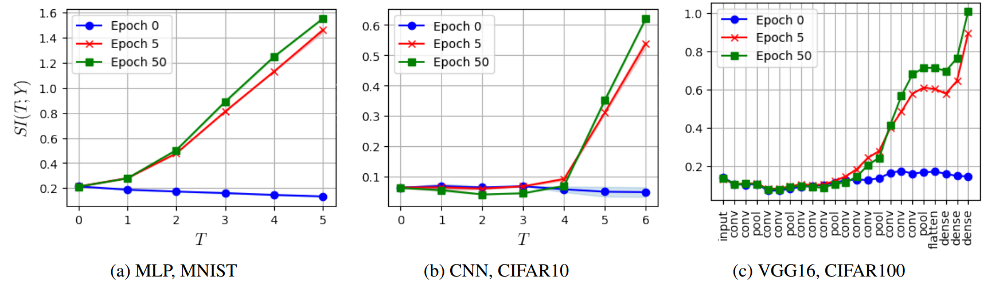
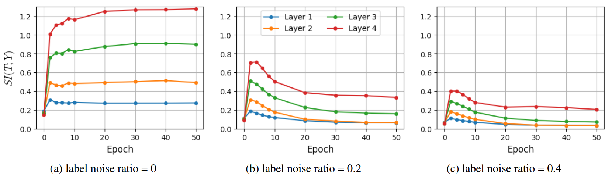
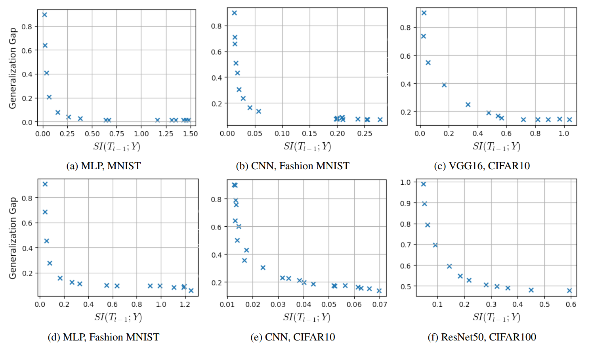

Using Sliced Mutual Information to
Study Memorization and Generalization
in Deep Neural Networks
AISTATS 2023 (Oral)
This paper uses Sliced Mutual Information (SMI) to analyze the memorization and generalization behaviors of deep neural networks (DNNs).
Overview
Deep neural networks generalize remarkably well across many tasks. Yet it remains unclear what their internal representations capture and how these representations relate to memorization and generalization.
The paper proposes to study this using Sliced Mutual Information (SMI), introduced by Goldfeld and Greenewald (2021), as an alternative to standard mutual information (MI) for analyzing high-dimensional random variables. By averaging MI estimates across many random projections, SMI provides a more scalable way to quantify dependence in high-dimensional settings.
In this paper, we:
- analyze label information across layers and epochs,
- study how SMI relates to memorization,
- study how SMI correlates with the generalization gap, and
- relate SMI to margin and intrinsic dimensionality.
Sliced Mutual Information
Sliced Mutual Information (SMI) is defined as the average mutual information between one-dimensional random projections of two random variables:
$$ \mathrm{SI}(X;Y) := I(\Theta^\top X;\Phi^\top Y \mid \Theta,\Phi) = \frac{1}{S_{d_x-1}S_{d_y-1}} \int_{\mathbb{S}^{d_x-1}} \int_{\mathbb{S}^{d_y-1}} I(\theta^\top X;\phi^\top Y)\, d\theta\, d\phi. $$
In the experiments, the is computed between the hidden representations $(X)$ and the labels $(Y)$.
Results
1. Layer-wise training dynamics
The first result examines how SMI changes across network depth and training epochs. Across different architectures and datasets, SMI is low at initialization and increases more strongly in deeper layers as training progresses, indicating that later representations become increasingly informative about the labels.

2. Behavior under label noise
The second result studies how SMI evolves under different levels of label corruption. When there is no label noise, SMI rises and remains high, particularly in deeper layers. In the presence of label noise, all the hidden layers experience an increase in SMI first before decreasing. This may indicate that the networks learn relevant and generalizable features first before proceeding to memorize. Furthermore, we observe that the SMI of deeper layers drop more compared to the earlier layers when the network is memorizing.

3. Connection to generalization
The third result shows a consistent relationship between SMI and generalization gap across multiple models and datasets. In all cases, larger SMI values are associated with smaller generalization gaps, supporting the theoretical connection between SMI and margin as well as intrinsic dimensionality.

Citation
@inproceedings{wongso2023smi,
title = {Using Sliced Mutual Information to Study Memorization and Generalization in Deep Neural Networks},
author = {Wongso, Shelvia and Ghosh, Rohan and Motani, Mehul},
booktitle = {Proceedings of The 26th International Conference on Artificial Intelligence and Statistics},
year = {2023},
url = {https://proceedings.mlr.press/v206/wongso23a.html}
}